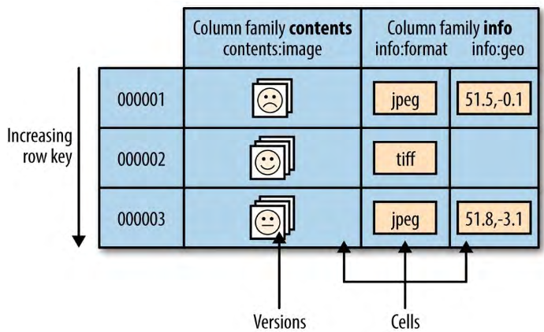
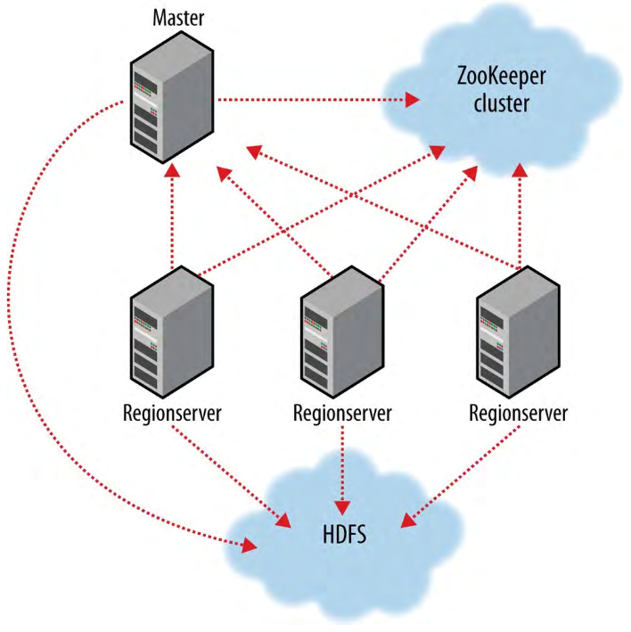

1、HBase数据模型
HBase把数据保存在标签表中（labeled tables）。表由行和列构成，表的单元格（cell）——行和列坐标交叉——是有版本的。默认情况下，表的单元格的版本是单元格插入时HBase自动分配的时间戳。单元格的内容是一个未解释的（uninterpreted）字节数组。
HBase 数据模型

表的row key也是字节数组，理论上任何数据都可以作为row key，比如字符串、long的二进制表示或者序列化的数据结构都可以作为row key。表的行按照row key存储，即row key是表的主键。顺序是字节顺序（byte-ordered）。所有的表访问操作都是通过主键。
row columns被到列族（column families）中。列族的所有成员都有一个相同的前缀，比如，列info:format和info:geo都是列族info的成员；而列cotents:image属于contents列族。列族前缀必须是可打印的（printable）字符。限定尾（qualifying tail），即列族限定符（qualifier），可以由任意字节构成。列族和限定符用冒号分隔。表的的列族作为表schema定义的一部分必须首先指定，但是新的列族成员可以随时按需增加。
物理上，所有的列族成员都一起保存在文件系统中。所以，尽管把HBase说是面向列的存储，但是说它是面向列族的存储会更精确。因为调试和存储规范都是在列族级别进行的，建议所有的列族盛有都有相同通用访问模式（general access pattern）和大写特征（size characteristics）。对于相片表，图片数据比较大（MB）要保存在与元数据（metadata，大小比较小：kb级别）不同的列族中。
综上，HBase表与RDBMS表类似，只是单元格是有版本的、行是有序的（rows are sorted），并且可以通过客户端随意地往已经存在的列族中添加列。
1.1、区域（Regions）
表被HBase自动地水平地分区为区域（regions）。每个区域包含表行的一个子集。区域由它所属的表、它的第一行（包含）和它的最后一行（不包含）表示。最初，一个表只包含一个区域，但是随着区域的增长，最终区域的大小会超过一个可配置的大小阈值，此时，它会在某一个行边界分裂为两个大小几乎相同的新的区域。在首次分裂发生之前，所有的数据加载都是针对维护原始区域的那一个服务器进行的。随着表的增长，区域数量也增加。区域是跨整个HBase集群中分布的单元。按照这种方式，单台服务器无法维护的表可以由一个集群的服务器来承载，每个节点承载表全部区域的一个子集。这也意味着一个表的负载也被分散了。有序的区域（sorted regions）的在线集合包含了表的全部内容。区域是HBase中分布式存储、负载均衡、并行化的最小单元。
每个区域由至少一个Store组成，每个Store对应一个列族，每个Store包含一个MemStore以及0个或多个StoreFile，MemStore中的数据刷出道文件系统后就是StoreFile，StoreFile以HFile的格式保存。
1.2、锁（Locking）
行更新是原子的，无论构成行级别事务的列有多少。这让使模型很简单。
2、实现
与由客户端、工作节点、和一个协调master（coordinating master）构成的HDFS和YARN类似——HDFS中的namenode和datanodes、YARN中的resource manager和node managers——HBase由一个HBase master节点和一个或者多个regionserver工作节点构成。HBase master负责启动一个HBase集群初始安装，协调regionservers、把区域分配给注册的regionservers，平衡regionservers的负载，监控regionservers的状态、并把故障的regionserver重启。master节点是低负载的（lightly loaded）。regionservers承载0个或者多个区域并且响应客户端的读写请求，也管理着区域的分裂、通知HBase master新的子regions以便mater可以处理父区域的下线，并安排子区域作为替代。每个regionserver还包含了一个HLog/WAL（Write Ahead Log）实例，用来保证数据的正确性。
HBase集群成员

HBase要依赖ZooKeeper，通过ZooKeeper进行服务器之间的协调，默认情况下，HBase管理者一个ZooKeeper实例，尽管可以通过配置使用既存的ZooKeeper集群。ZooKeeper管理着重要的信息，比如hbase:meta catalog表的位置和当前集群master的地址。当区域分配过程中出现了成员服务器崩溃时，通过ZooKeeper来协调区域分配。把分配事务状态保存在ZooKeeper中，使分配事务成为可恢复的，在崩溃的服务器下线后可以继续进行分配。启动客户端到HBase集群的连接时，客户端至少要传递ZooKeeper ensemble的位置。客户端通过ZooKeeper获取集群的属性比如服务器位置。
regionserver工作节点列在HBase的conf/regionservers文件中，如同把datanodes和node managers列在Hadoop的etc/hadoop/slaves文件。启动和停止脚本与Hadoop类似，并且使用相同的基于SSH的机制来运行远程命令。集群的站点专用配置由HBase的conf/hbase-site.xml和conf/hbase-env.sh文件完成，与Hadoop的对应文件格式相同。
HBase通过Hadoop文件系统API持久化数据。HBase默认把数据写到本地文件系统，实际应用中，要让HBase把数据写到HDFS集群。
3、运行中的HBase（HBase in operation）
HBase有一个专用的catalog表hbase:meta，它维护着集群中所有用户空间区域的列表、状态和位置。hbase:meta中的条目以区域名为键，区域名由区域所属表名、区域的起始行、它的创建时间和以上信息的MD5 hash构成。比如，TestTable表起始行为xyz的区域的名字为：
TestTable,xyz,1279729913622.1b6e176fb8d8aa88fd4ab6bc80247ece.
逗号将表名、起始行、时间戳分隔，MD5 hash首尾都是句号（英文）。
row key是有序的，找到包含某一行所在的区域的问题就转换为——找到hbase:meta中小于等于指定row key的那些区域中key最大的那一个的问题。catalog表会随着区域的变化而变化，它的状态与集群中所有区域的状态同步。
新连接到ZooKeeper集群的客户端首先查找hbase:meta的位置。客户端通过查找合适的hbase:meta区域来获得用户空间区域和它的位置。然后，客户端直接和那个regionserver交互。
客户端会把从hbase:meta获取的所有数据（包括位置和用户空间区域起止行）缓存，以便在不回头使用hbase:meta表的情况下可以找到区域。客户端在发现错误之前会持续地缓存数据。当区域删除，客户端会向hbase:meta表再次查询，如果hbase:meta表被删除，则向ZooKeeper查询。
写数据时，到达regionserver的写数据首先追加到commit log（HLog/WAL），然后添加到在内存的memstore。memstore填满后，它的内容会刷到（flush）文件系统。commit log位于HDFS，所以regionserver故障时仍然可用。正常操作时用不到WAL，如果数据从memstore刷到StoreFile之前regionserver故障，WAL可以重播对数据的更改。如果数据写入WAL失败，则写入操作失败。HBase的更新和删除都是增加一条数据，版本不同keyType不同而已。
读取时，首先查询区域的memstore，如果仅在memstore就找到了正确的版本，查询结束。否则，按照从新到老的顺序查询memstore刷出的文件，直到查找到正确的版本或者查找完所有的刷出文件。
当刷出文件的数量超过一个阈值时，一个后台进程会压缩合并这些文件为一个文件，因为查询的文件越少，越高效。压缩是，这个进程会清除超过schema-配置的最大值的版本并移除那些删除的和过期的单元格。regionserver中另一个独立的进程监控刷出文件的大小，在刷出文件大小超过配置的最大值时将这个区域切分。
4、客户端
Java
MapReduce
REST和Thrift
需要启动相应的服务
HBase shell
运行命令hbase shell